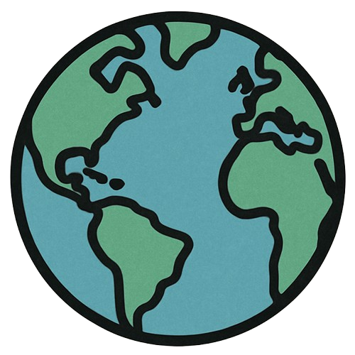

 Where's My Antipode?
Other Sites by Jdeseech
🌍 Find Your Antipode
Right-click anywhere on the globe or enter coordinates below
Latitude
Longitude
🔍 Find Antipode
📍 Clicked Location
Loading...
🌏 Antipode
Loading...